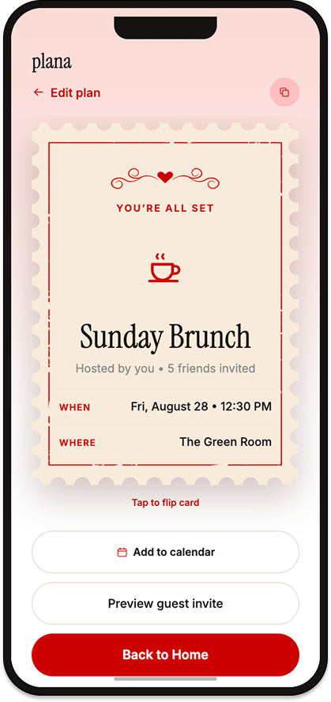
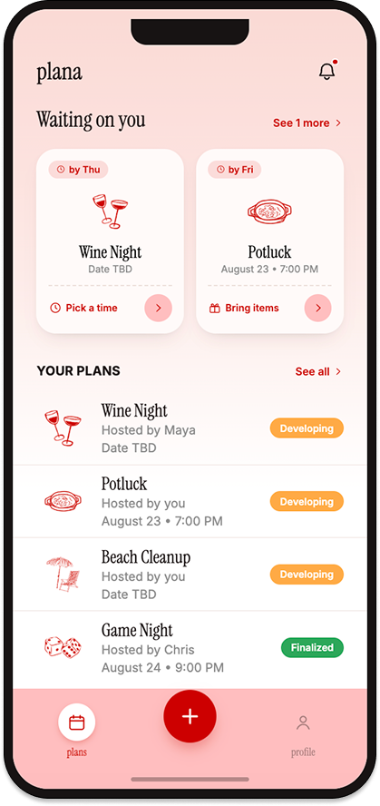

Overview
Plana
An event planning app that takes a plan from a loose idea to a confirmed invite.
- Product
- Plana is a mobile app that helps friends actually lock in plans. It polls everyone on times and locations, organizes who is bringing what, and sends out shareable invites, replacing the scattered group chat with one flow.
- Challenge
- Some apps help people find a time that works for everyone, and others send invites once everything is decided. Nothing streamlines the whole process in between.


01 Context
Plans kept getting lost in the group chat.
During the summer, I noticed many of my friends struggling to schedule events. Plans got buried in group chats, and no one could keep track of when everyone said they were free. Half the time nobody agreed on where or when.
02 Research
Scheduling isn't the hard part. Landing on a plan is.
- Interviews
- I talked to 10 people in their 20s about scheduling pain points. No one tracked the overlap between everyone's free times, and plans kept changing, so nobody remembered who was actually coming.
- Competitors
- I compared apps like When2Meet and Partiful. Some nail availability polling, others nail invites, none do both. People love Partiful for how fun and polished its invites feel.
Key finding: There's no app for scheduling half-baked plans. It needs to cut the back-and-forth, but still feel fun enough that people actually want to use it.
03 Define
These pain points pointed to a single design challenge:
How might I take event planning from gathering input on times and locations to a confirmed invite, all in one app?
04 Design
Solving "let's figure it out."
The hardest part was keeping the flow fast and flexible enough to fit any kind of plan. Since nobody tracks everyone's availability upfront, I added a "Let's figure it out" option: hosts propose a few tentative times and locations, friends add their own, and everyone polls on what works. Every plan also generates a shareable invite card, and anyone with something left to answer gets notified, so plans keep moving.


- Setting the mood
- I started with a mood board to find the right feel: sketched icons, cute card invitations, and a personal touch, built for a young audience in their 20s.


- First mockups
- From there, I built three mockup screens to get a feel for the overall vibe before going any further.


- Built with Claude
- I brought that same mood into Claude to build out the rest of the screens and a working prototype. The location step covers in-person, online, and undecided plans, and past plans automatically become memories, where friends add their own photos.


05 Metrics
What I'd measure.
If I shipped this, these are the numbers I'd watch to know Plana is solving the problem, not just getting downloads.
-
Events finalizedThe core promise: how often a loose idea becomes a locked-in plan.
-
Creation completionWhether the creation flow is smooth enough to finish in one sitting.
-
Invite completionHow much friction is left once a guest fills out the form.
-
Events createdOverall adoption, and whether people come back to plan again.
06 Reflection
My takeaways.
The real bottleneck in group planning isn't finding a time. It's that no one owns getting the plan across the finish line. Visible reminders for exactly what's still unanswered mattered more than any scheduling logic, and it pushed me to design for messy, half-formed decisions instead of clean, finished ones.
I also learned how much faster I can move with Claude as part of my process, both for building a working prototype and for catching edge cases and logic gaps I'd missed. It's a workflow I want to keep using.
back to top ↑